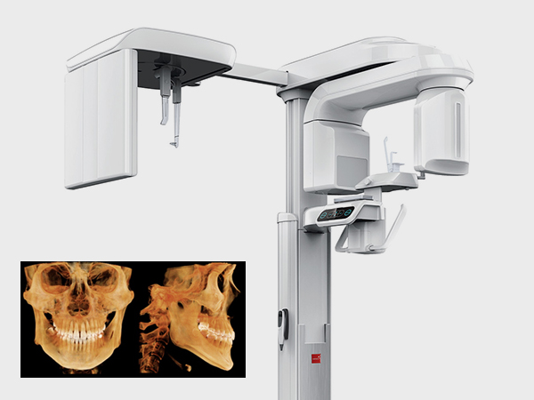
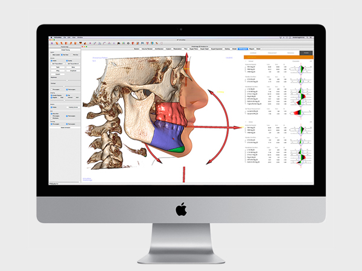
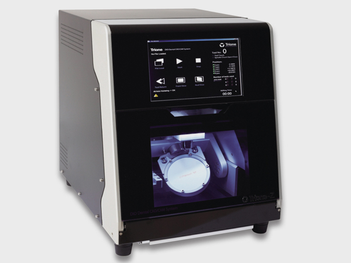

더 깊게 보고, 더 많이 보고
저선량 3D CT
정확한 진단을 위해 신경, 혈관까지의 길이를 정확히 측정하여
임플란트 수술시 의료사고가 거의 없이 안전하게 시술받을 수 있습니다.
<%=m_client_en%>

정확한 진단을 위해 신경, 혈관까지의 길이를 정확히 측정하여
임플란트 수술시 의료사고가 거의 없이 안전하게 시술받을 수 있습니다.

치아의 본을 뜨는 과정없이 빠르고 정밀하게
구강상태를 파악할 수 있는 3D구강스캐너를 사용하고 있습니다.

정밀하게 구현된 3D 영상은
구강 내 질환이나 해부학적 구조물의 형태를 검사할 수 있으며,
환자에게 효율적으로 설명이 가능합니다. 임플란트 수술, 교정, TMJ진단 등
특화된 진료 영역에서 정확한 진단 기능을 제공합니다.

석고모델로 디지털 보철 제작 시 필요한 3D 스캐너입니다.
석고모델로 재현된 구강을 다시 3D 이미지로 변환하는데 없어서는 안될
중요한 단계이며 변환된 데이터는 디지털 보철디자인을 거쳐
Trione Z 등 디지털 밀링머신에서 제작됩니다.

Trios 구강스캐너를 통해 얻은 구강 정보를 토대로 디자인된 보철물을
한치의 오차도 없이 그대로 가공하는 첨단 Milling Machine입니다.

병원내 모든 기구 등을 철저하게 소독, 관리하여
교차감염 등을 철저히 예방하고 있습니다.